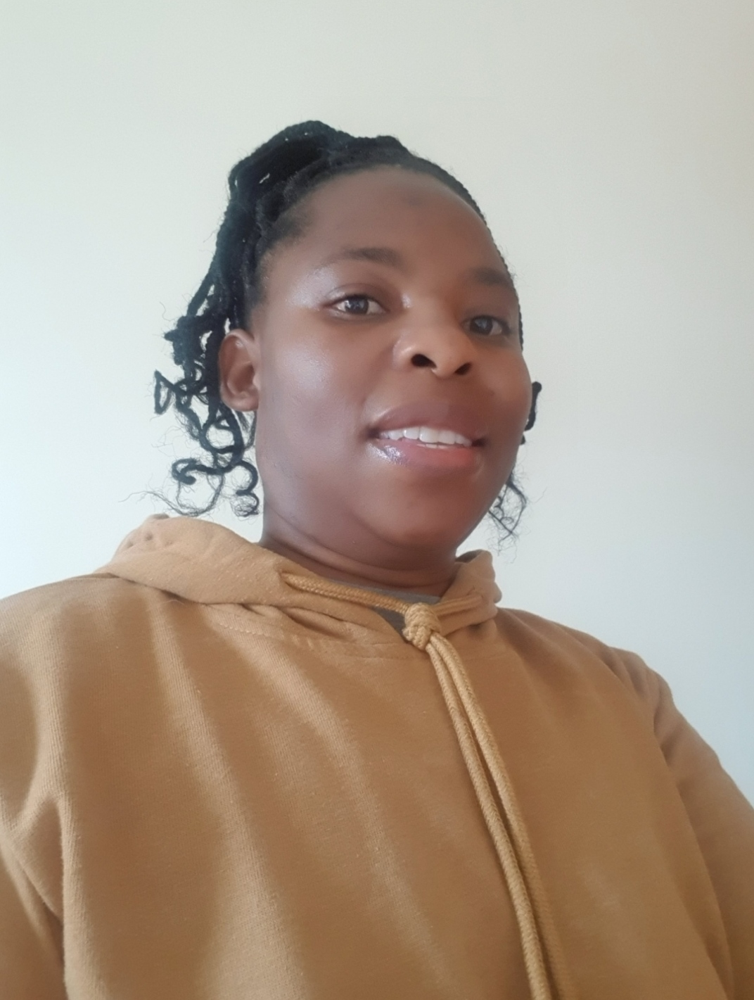

Margaret Mutyengedye | WDD 130
Hello! My name is Margaret Mutyengedye. I come from Mutare, a place in Manicaland province in the eastern part of Zimbabwe. I love learning and I want to learn more about web development. I am the second born of the four children in my family. I have two sisters and a brother who is the last born. I have been married to my husband for nearly 21 years now. Together we have a son aged 20 years old and a daughter aged 15 years. We love spending time together, just talking, walking, doing shopping together or watching animated movies or sports. We all love watching cricket and soccer, and we also love to watch major athletics events. When it comes to soccer, my husband and children's favorite soccer team is Manchester United. I like to oppose them, so, I support whichever team Manchester United plays against. We have lived in Botswana, South Africa then England. I love going to the temple with my family. Below is a list of three of my favorite temples.